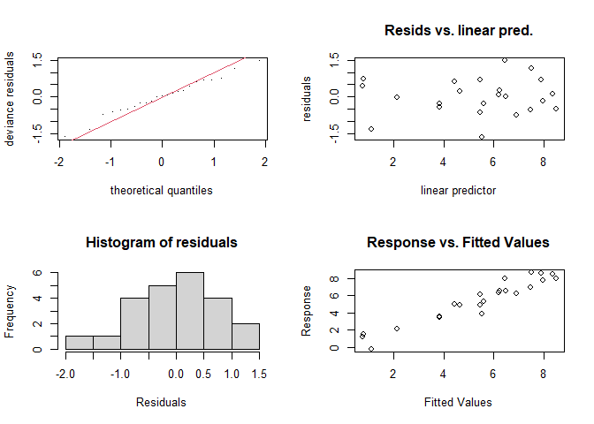
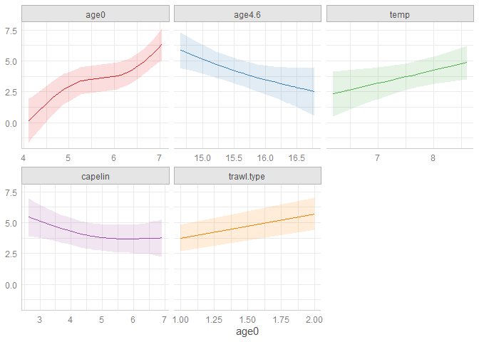
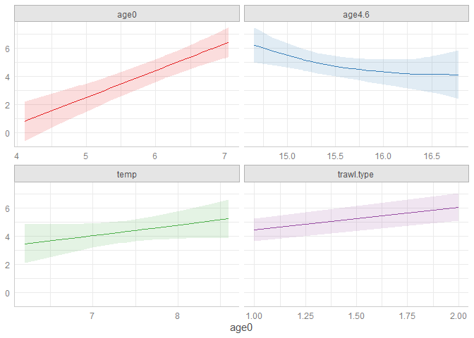

En esta sección se resume los conceptos más importantes vistos en la parte práctica de cada clase.
Cargamos librerías a utilizar
library(ggplot2)
library(datasets)
library(MASS)
library(statmod)
library(mgcv)
library(faraway)
library(ggeffects)
library(nlme)
library(lme4)
library(mlmRev)Trabajemos con esta base de datos:
BScod = read.csv(file = 'cod01.csv',header=T,sep=';')
head(BScod)## year age1 age0 capelin temp age4.6 trawl.type
## 1 1980 1.5260563 4.110874 6.492240 7.4 15.32 1
## 2 1981 -0.2231436 4.174387 6.599870 6.6 14.85 1
## 3 1982 5.0297841 4.912655 6.625392 7.1 14.66 1
## 4 1983 7.9211727 6.129050 5.973810 8.1 14.69 1
## 5 1984 3.9019727 6.326149 4.691348 7.7 15.16 1
## 6 1985 6.5009893 6.609349 2.639057 7.1 15.69 1Implementamos un primer modelo, donde la variable respuesta es
age1 (indice de sobrevivencia):
age1.0 = gam(age1 ~ s(age0,k=5)+s(age4.6,k=5)+s(temp,k=5)+s(capelin,k=5)+factor(trawl.type), data=BScod)
summary(age1.0)##
## Family: gaussian
## Link function: identity
##
## Formula:
## age1 ~ s(age0, k = 5) + s(age4.6, k = 5) + s(temp, k = 5) + s(capelin,
## k = 5) + factor(trawl.type)
##
## Parametric coefficients:
## Estimate Std. Error t value Pr(>|t|)
## (Intercept) 4.5125 0.3489 12.935 4.22e-09 ***
## factor(trawl.type)2 1.9687 0.6666 2.953 0.0106 *
## ---
## Signif. codes: 0 '***' 0.001 '**' 0.01 '*' 0.05 '.' 0.1 ' ' 1
##
## Approximate significance of smooth terms:
## edf Ref.df F p-value
## s(age0) 2.962 3.409 9.400 0.000895 ***
## s(age4.6) 1.445 1.740 5.684 0.042427 *
## s(temp) 1.000 1.000 4.546 0.051196 .
## s(capelin) 1.795 2.172 1.943 0.160389
## ---
## Signif. codes: 0 '***' 0.001 '**' 0.01 '*' 0.05 '.' 0.1 ' ' 1
##
## R-sq.(adj) = 0.865 Deviance explained = 91.5%
## GCV = 1.4459 Scale est. = 0.86742 n = 23Observemos que estamos especificando un número de nodos
(k) por nuestra cuenta. Chequeamos nuestros resultados:
par(mfrow = c(2,2))
gam.check(age1.0)
##
## Method: GCV Optimizer: magic
## Smoothing parameter selection converged after 17 iterations.
## The RMS GCV score gradient at convergence was 7.52904e-08 .
## The Hessian was positive definite.
## Model rank = 18 / 18
##
## Basis dimension (k) checking results. Low p-value (k-index<1) may
## indicate that k is too low, especially if edf is close to k'.
##
## k' edf k-index p-value
## s(age0) 4.00 2.96 1.20 0.81
## s(age4.6) 4.00 1.45 0.97 0.35
## s(temp) 4.00 1.00 0.88 0.21
## s(capelin) 4.00 1.79 1.04 0.52Al parece todo se ve bien. Vamos a graficar los efectos sobre la respuesta:
plot(ggeffects::ggpredict(age1.0), facets = TRUE)
Como vemos, al parece la variable capelin es la menos
importante en este modelo. Vamos a removerla y crear otro modelo:
age1.1 = gam(age1~s(age0,k=5)+s(age4.6,k=5)+s(temp,k=5)+factor(trawl.type),data=BScod)
summary(age1.1)##
## Family: gaussian
## Link function: identity
##
## Formula:
## age1 ~ s(age0, k = 5) + s(age4.6, k = 5) + s(temp, k = 5) + factor(trawl.type)
##
## Parametric coefficients:
## Estimate Std. Error t value Pr(>|t|)
## (Intercept) 4.6599 0.3609 12.913 2.73e-10 ***
## factor(trawl.type)2 1.6297 0.6510 2.504 0.0226 *
## ---
## Signif. codes: 0 '***' 0.001 '**' 0.01 '*' 0.05 '.' 0.1 ' ' 1
##
## Approximate significance of smooth terms:
## edf Ref.df F p-value
## s(age0) 1.000 1.00 35.128 1.5e-05 ***
## s(age4.6) 1.768 2.18 2.223 0.124
## s(temp) 1.000 1.00 2.368 0.142
## ---
## Signif. codes: 0 '***' 0.001 '**' 0.01 '*' 0.05 '.' 0.1 ' ' 1
##
## R-sq.(adj) = 0.821 Deviance explained = 85.9%
## GCV = 1.5386 Scale est. = 1.1528 n = 23Vamos a graficar los efectos sobre la respuesta:
plot(ggeffects::ggpredict(age1.1), facets = TRUE)
¿Qué modelo es el mejor? Podemos calcular el AIC de cada modelo:
AIC(age1.0)## [1] 70.65145AIC(age1.1)## [1] 75.43597Esto nos sugiere elegir el modelo con la variable
capelin.
Sin embargo, también podemos hacer un ANOVA para evaluar la
importancia de la variable capelin en el modelo:
anova(age1.1,age1.0,test='F')## Analysis of Deviance Table
##
## Model 1: age1 ~ s(age0, k = 5) + s(age4.6, k = 5) + s(temp, k = 5) + factor(trawl.type)
## Model 2: age1 ~ s(age0, k = 5) + s(age4.6, k = 5) + s(temp, k = 5) + s(capelin,
## k = 5) + factor(trawl.type)
## Resid. Df Resid. Dev Df Deviance F Pr(>F)
## 1 16.82 19.865
## 2 12.68 11.969 4.1403 7.8959 2.1986 0.1261El ANOVA nos sugiere que la variable capelin no es
importante y debemos removerla. En casos como esto, se sugiere quedarnos
con el modelo más simple.